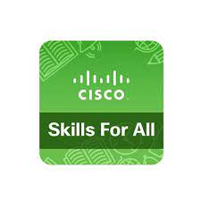

Certifications
Certified Information Security Manager (CISM)
Cybrary, Issued Jun 2024
Systems Security Certified Practitioner (SSCP)
Cybrary, Issued Jul 2024

Google Cybersecurity
Coursera, Issued Apr 2024, Credential ID XUKE2X6U44SV

Cisco Networking Devices and Initial Configuration
Issued Jul 2024
Cisco Endpoint Security
Issued Jul 2024
Cisco Networking Basics
Credential ID 5ffb60a3-da7e-49f3-9cfe-4f4838a4614f